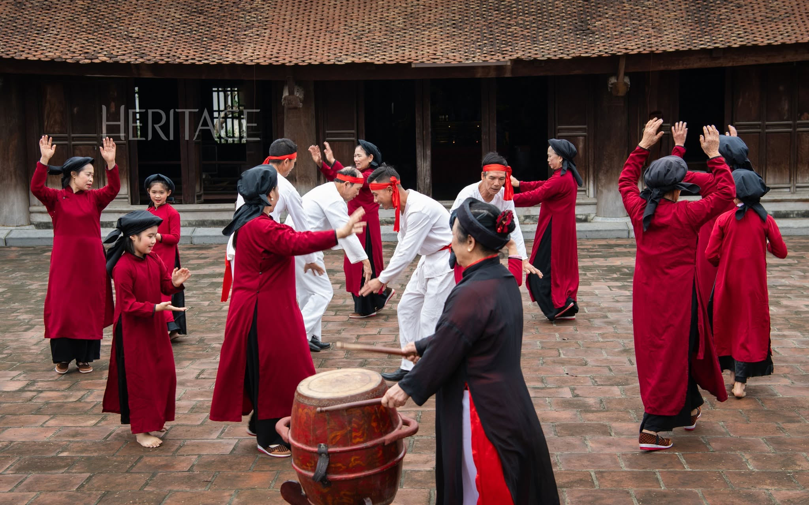
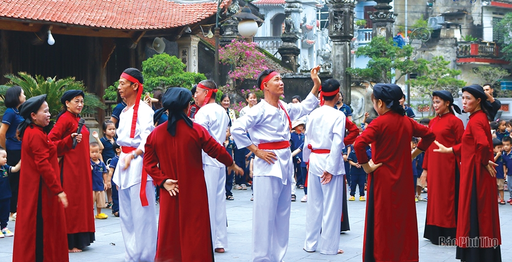

⌂
Lịch sử & Nguồn gốc
Từ truyền thuyết thời Hùng Vương đến không gian đình làng và sinh hoạt cộng đồng ở vùng Đất Tổ.
Tìm hiểu →Câu hát cửa đình từ miền Đất Tổ, nơi tiếng hát, điệu múa, tiếng trống và phách cùng kể câu chuyện về cội nguồn và đời sống cộng đồng.
Hát Xoan gắn với không gian đình, miếu và tục thờ Hùng Vương ở Phú Thọ; nghệ thuật trình diễn kết hợp hát, múa, trống và phách.
Khám phá di sản
Hát Xoan là nghệ thuật trình diễn dân gian của Phú Thọ, gắn với tục thờ Hùng Vương và sinh hoạt cộng đồng. Giá trị của di sản nằm ở sự kết hợp giữa âm nhạc, lời ca, múa, nhịp trống – phách và không gian thực hành truyền thống.
Từ truyền thuyết thời Hùng Vương đến không gian đình làng và sinh hoạt cộng đồng ở vùng Đất Tổ.
Tìm hiểu →
Những bài hát vừa mang sắc thái nghi lễ vừa phản ánh chúc phúc, đời sống và tình cảm cộng đồng.
Nghe & đọc →
Ông trùm, bà trùm và nghệ nhân giữ vai trò truyền khẩu, hướng dẫn bài bản và duy trì sinh hoạt phường Xoan.
Gặp người giữ lửa →
01 · Lịch sử
Theo tư liệu văn hóa, Hát Xoan được lưu truyền ở vùng Phú Thọ và gắn với truyền thuyết thời các Vua Hùng. Trong thực hành truyền thống, Xoan hiện diện trong mùa xuân, tại đình, miếu và những không gian cộng đồng.
Di sản được thực hành trong quan hệ với cộng đồng làng và tín ngưỡng, đặc biệt là tục thờ Hùng Vương.
Nghệ nhân truyền dạy bằng thực hành trực tiếp, kết hợp truyền khẩu với tư liệu ghi âm, ghi hình và văn bản.
Hát Xoan được ghi danh vào Danh sách cần bảo vệ khẩn cấp năm 2011; năm 2017 được chuyển sang Danh sách Di sản văn hóa phi vật thể đại diện của nhân loại.
02 · Cấu trúc trình diễn
Các nguồn tư liệu của Bộ Văn hóa, Thể thao và Du lịch và cổng thông tin du lịch Phú Thọ mô tả Hát Xoan theo ba chặng chính: hát nghi lễ (hát thờ), hát quả cách và hát hội/giao duyên.

Còn được gọi là hát thờ, hát chào vua hoặc hát mời vua. Đây là phần mang màu sắc nghi lễ, mở đầu việc diễn xướng trong không gian thờ tự.

“Quả cách” là tên gọi truyền thống cho những bài bản dài. Nội dung thường hướng đến lời chúc phúc, kể về mùa vụ, thời tiết, nghề nghiệp và đời sống cư dân.

Phần hát hội tạo không khí giao lưu cộng đồng. Nhiều tiết mục thể hiện sự đối đáp, giao duyên giữa đào Xoan và trai làng, với sắc thái vui tươi và giàu tính tương tác.
03 · Thanh âm di sản
"Không gian âm thanh truyền thống của Hát Xoan được lưu giữ qua từng nhịp phách, câu ca. Mời bạn lắng nghe những làn điệu tiêu biểu qua các chặng hát dưới đây."
Chặng hát nghi lễ
Chặng hát quả cách
Chặng hát hội
04 · Tư liệu số
"Hát Xoan không nằm trên những trang giấy cũ, mà đang thở và chảy mãi trong đời sống cộng đồng. Mời bạn khám phá kho tư liệu sống về những nghệ nhân, không gian diễn xướng và hành trình trao truyền di sản qua các thế hệ."
 Không gian
Không gian
Hát Xoan còn được gọi là hát cửa đình. Các phường Xoan thực hành trong những không gian gắn với tín ngưỡng và cộng đồng như miếu Lãi Lèn, đình Thét, đình Kim Đái, đình An Thái và đình Hùng Lô. Vì vậy, di tích không chỉ là nơi đặt sân khấu mà là một phần của bối cảnh văn hóa của cuộc hát.
 Truyền dạy
Truyền dạy
Hát Xoan được học chủ yếu qua thực hành và truyền khẩu. Người học tiếp nhận lời hát, động tác múa, cách gõ nhịp và cách phối hợp trong nhóm từ nghệ nhân và thành viên có kinh nghiệm. Các lớp học cộng đồng, hoạt động trải nghiệm với học sinh và chương trình truyền dạy giúp tạo thêm môi trường để thế hệ trẻ tiếp tục thực hành di sản.
 Nhạc cụ
Nhạc cụ
Trống và phách tre là những nhạc cụ đặc trưng của Hát Xoan. Kép nam thường lĩnh xướng, múa và đệm trống; đào nữ hát phỏng, hát đối đáp và múa. Nhịp gõ giúp giữ mạch cho lời ca và động tác, tạo nên phần âm thanh mộc mạc của cuộc hát.
Đình, miếu và làng tạo nên không gian xã hội để cuộc hát được thực hành.
Học hát gắn với học múa, nhịp gõ, lề lối và phối hợp trong phường.
Trống và phách góp phần tổ chức nhịp điệu của lời ca, múa và diễn xướng.
05 · Con người của di sản
Hát Xoan được bảo tồn không chỉ bằng tư liệu mà trước hết bằng cộng đồng thực hành. UNESCO ghi nhận bốn phường Xoan truyền thống; trong mỗi phường, trùm giữ vai trò quan trọng trong việc bảo tồn bài bản, tuyển chọn người học, truyền dạy lối hát và tổ chức luyện tập.

Nguồn của Bộ Văn hóa, Thể thao và Du lịch ghi nhận bà Nguyễn Thị Lịch là Trùm phường Xoan An Thái, xã Phượng Lâu, thành phố Việt Trì; bà sinh ra trong gia đình có truyền thống Hát Xoan và có nhiều đóng góp trong việc gây dựng, thực hành và truyền dạy di sản.

Bài viết của Bộ Văn hóa, Thể thao và Du lịch năm 2025 ghi nhận ông Nguyễn Xuân Hội là Trùm phường Xoan Phù Đức, xã Kim Đức; phường tổ chức ôn luyện các làn điệu Xoan để phục vụ biểu diễn dịp Giỗ Tổ Hùng Vương.
Hồ sơ UNESCO năm 2017 nêu vai trò của các nghệ nhân trùm và minh họa việc truyền dạy trong phường Kim Đới; một tư liệu UNESCO năm 2016 ghi rõ bà Nguyễn Thị Lịch ký cam kết đại diện phường An Thái trong quá trình lập hồ sơ đề cử.
Mở hồ sơ UNESCO →Bản đồ cộng đồng
Theo hồ sơ kiểm kê Xoan gửi UNESCO, bốn phường truyền thống gồm An Thái, Phù Đức, Kim Đới và Thét. Tư liệu kiểm kê 2015 ghi Phù Đức, Kim Đới và Thét ở Kim Đức; An Thái ở Phượng Lâu.
Một trong bốn phường Xoan truyền thống. UNESCO và Bộ VHTTDL ghi nhận An Thái gắn với xã Phượng Lâu, thành phố Việt Trì; nghệ nhân Nguyễn Thị Lịch được ghi nhận là Trùm phường An Thái trong các nguồn nêu trên.
Một trong ba phường được hồ sơ kiểm kê 2015 xác định ở Kim Đức. Nguồn Bộ VHTTDL năm 2025 ghi nhận Trùm phường là Nguyễn Xuân Hội và cho biết phường duy trì luyện tập, biểu diễn phục vụ cộng đồng và du khách.
Phường Xoan truyền thống được UNESCO liệt kê cùng Phù Đức và Kim Đới trong nhóm phường ở Kim Đức. Đình Thét là một trong những không gian văn hóa gắn với thực hành Xoan tại địa phương.
Phường Xoan truyền thống ở Kim Đức. UNESCO từng giới thiệu hình ảnh ông Nguyễn Văn Quyết (sinh năm 1986) với tư cách lãnh đạo phường Kim Đới trong tư liệu năm 2016; chức danh này được giữ nguyên theo mốc nguồn, không suy diễn thành chức danh hiện tại.